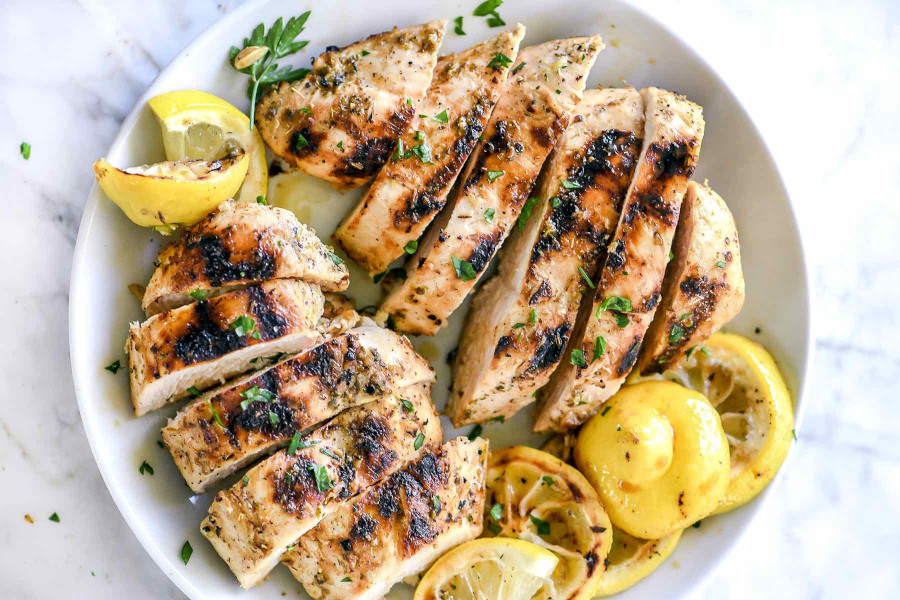

Greek Style Garlic Chicken Breast

Grilled greek chicken breast for four servings
If you're looking for a great tasting, tender chicken breast,
this is what you're looking for.
Ingredients
- 4 skinless, boneless chicken breast halves
- 1 cup extra virgin olive oil
- 1 lemon, juiced
- 2 teaspoons crushed garlic
- 1 teaspoon salt
- 1.5 teaspoons black pepper
- 1/3 teaspoon paprika
Directions
- Cut 3 slits in each chicken breast to allow marinade to penetrate.
In a small bowl, whisk together olive oil, lemon juice, garlic,
salt, pepper, and paprika for about 30 seconds. Place
chicken in a large bowl, and pour marinade over. Using your hands,
work marinade into chicken. Cover, and refrigerate overnight.
- Preheat grill for medium heat, and lightly oil grate
- Cook chicken on grill until meat is no longer pink and juice runs clear
Home Page